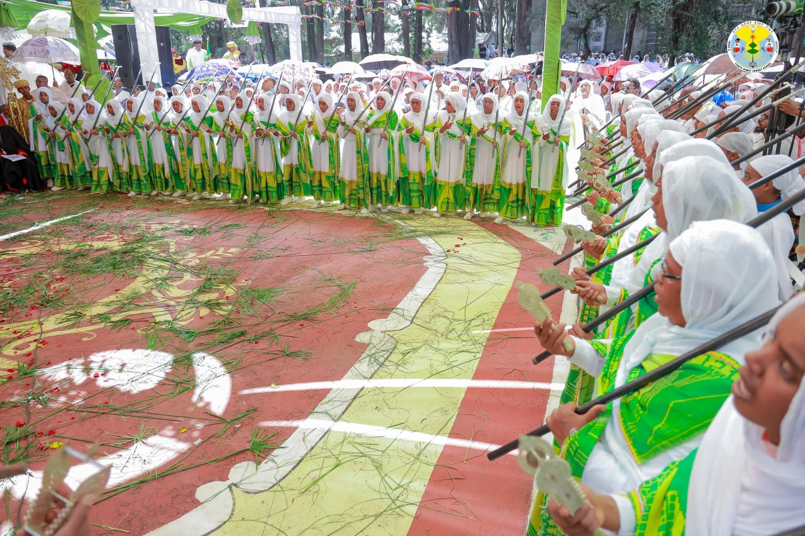

Finote Hiwot Sunday School (ፍኖተ ሕይወት ሰንበት ትምህርት ቤት) is the vibrant youth and spiritual education fellowship serving the historic Kechene Debre Selam Medhane Alem and Debre Tiguhan Kidus Gabriel parish in Addis Ababa, bringing together children, teenagers, and young adults in faith and community service. Rooted in the ancient traditions of the Ethiopian Orthodox Tewahedo Church, the fellowship provides structured religious instruction covering scripture, church history, dogma, and Ge'ez liturgical heritage while actively training its choir to perform sacred hymns (Mezmur) and traditional liturgical dances (Wereb) during Sunday services, overnight vigils (Mahlet), and the grand 19th-day feast celebrations of Kidus Gabriel. Beyond its liturgical and educational mission, Finote Hiwot serves as a dynamic pillar of the Gullele neighborhood by organizing spiritual conferences, preserving parish relics and historical lessons, and leading charitable outreach programs that foster unity, moral guidance, and lifelong spiritual growth among the younger generation
